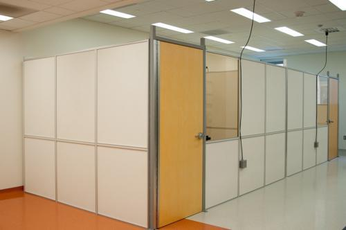

-
First of its kind - a carbon nanotube interior micro-CT, for imaging beating mouse heart with up to 85% radiation dose reduction!
-
Dr. Cao gave a presentation to Freedom from Cancer Startup Challenge. (12/2017)
- Paper published: S. Zhang, D. Zhang, H. Gong, O. Ghasemalizadeh, G. Wang, and G. Cao, "Fast and Accurate Computation of System Matrix for Area Integral Model Based Algebraic Reconstruction Technique", Opt. Eng., 53(11), 113101 (10/2014)
- Dr. Cao gave an invited talk at UT Arlington (10/2014)
- Sophomore student Gina Muan from BSE joined our group as a volunteer researcher (09/2014)
- Ms. Olga Pen and Mr. Xu Dong joined the X-ray Systems Lab as graduate students. Welcome! (08/2014)
- Mr. Hao Gong successfully passed the SBES PhD Qualifying Examination. Congratulation! (07/2014)
- Paper published: Sharma, Kriti Sen; Gong, Hao; Ghasemalizadeh, Omid; Yu, Hengyong; Wang, Ge; Cao, Guohua; "Interior micro-CT with an offset detector", Medical physics 41(6), 61915 (06/2014)
- Dr. Cao is named the Scholar of the Week. Link to the news (04/2014)
- James Bennett successfully defended his PhD thesis and will begin his postdoc position at Yale. Congratulation!! (02/2014)
- Freshmen student Sarah Chaikind from BSE joined our group as a volunteer researcher (02/2014)
- We congratulate our three undergraduate students - Suphassorn(Mai) Eaksen, Nicholas Zempolich, and Dylan Hesse - for successfully performing research in our group and obtaining credits for their BME Minor degree. (12/2013)
- Paper published: Gong, Hao; Miao, Chuang; Yu, Hengyong; Wang, Ge; Cao, Guohua; "Real phantom datasets for the evaluation of reconstruction algorithms at various dose conditions", 2014 IEEE 11th International Symposium on Biomedical Imaging (ISBI) 65-68 (04/2014)
- Paper published: Opie, Alex MT; Bennett, James R; Walsh, Michael; Rajendran, Kishore; Yu, Hengyong; Xu, Qiong; Butler, Anthony; Butler, Philip; Cao, Guohua; Mohs, Aaron M; "Study of scan protocol for exposure reduction in hybrid spectral micro-CT", Scanning, 36(4) (03/2014)
- Paper published: Bennett, James; Opie, A; Xu, Qiong; Yu, Hengyong; Walsh, Michael; Butler, Anthony; Butler, Phillip; Cao, Guohua; Mohs, Aaron; Wang, Ge; "Hybrid spectral micro-CT: system design, implementation & preliminary results", IEEE Transactions on Biomedical Engineering, 61(2) (02/2014)
- Dr. Cao won the prestigious NSF CAREER Award! Link to the news (12/2013)
- We congratulate our three undergraduate students - Amy Wang, Scott Saverot, and Brian Choe - for successfully performing research in our group and obtaining credits for their BME Minor degree. (12/2013)
- Mr. Hao Gong gave a poster presentation entitled "Cardiac CT Architecture with Lower Radiation Dose and Higher Temporal Resolution" at the 2013 BMES Annual Conference in Seattle. (10/2013)
- Two undergraduate students, Tyler Blevins and Max DaVee, joined our group as volunteer researchers. (08/2013)
- Drs. Cao and Robertson received a ICTAS grant to develop technology for cardiovascular imaging. (07/2013)
- Kriti Sen Sharma successfully defended his PhD thesis and will work as a Senior Engineer at GE Healthcare. Congratulation!! (05/2013)
- Dr. Cao received a grant from Carilion Hospital (05/2013)
- Paper published: Wang, Ge; Liu, Feng; Liu, Fenglin; Cao, Guohua; Gao, Hao; Vannier, Michael W; "Marriage of CT and MRI for vulnerable plaque characterization", Imaging in Medicine, 5(2) 95-97 (04/2013).
- Paper published: Cong, Wenxiang; Shen, Haiou; Cao, Guohua; Liu, Hong; Wang, Ge; "X-ray fluorescence tomographic system design and image reconstruction", Journal of X-ray science and technology 21(1). (01/2013)
- Mr. Hao Gong joined the X-ray Systems Lab as a graduate student, and was named a Pratt Scholar in the SBES - a very prestigious award for the most outstanding students. Welcome and congratulation!! (08/2012)
- Dr. Cao presented an invited paper at the SPIE Optics+Photonics 2012 Conference - Developments in X-Ray Tomography VIII. (08/2012)
- Mr. Omid Ghasemalizadeh passed the Mechanical Engineering PhD Qualifying Examination. Congratulation! (04/2012)
- Dr. Cao received an Assistant Professor Mentoring Grant from the Provost's office. (04/2012)
-
The construction for two x-ray rooms at ICTAS 130 has been completed. (02/2012)
Two x-ray rooms have been constructed in the X-ray Systems Lab.
- Mr. Omid Ghasemalizadeh joined the X-ray Systems Lab as a graduate student. Welcome! (01/2012)
- Dr. Cao received a collaboration grant from the UNC's NCI-funded CCNE center. (01/2012)
- Dr. Guohua Cao established the X-ray Systems Lab in School of Biomedical Engineering and Sciences at Virginia Tech - Wake Forest University. (08/2011)